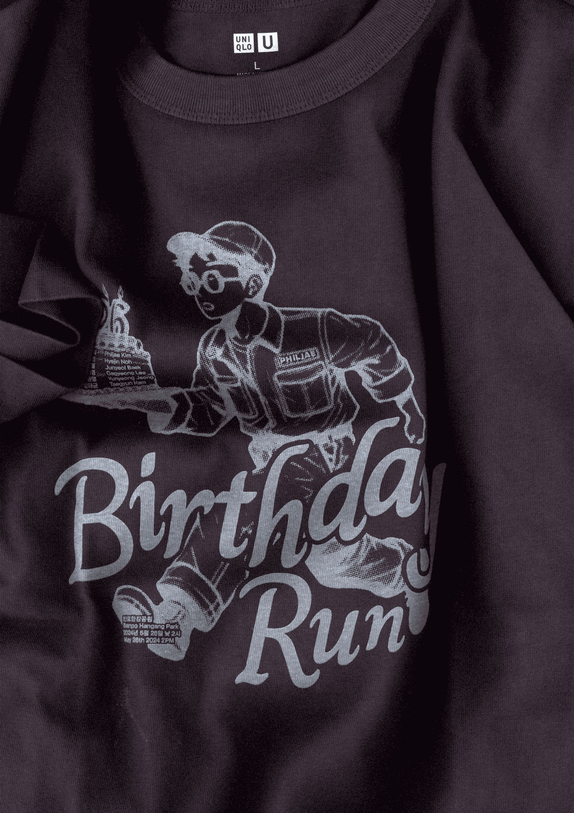
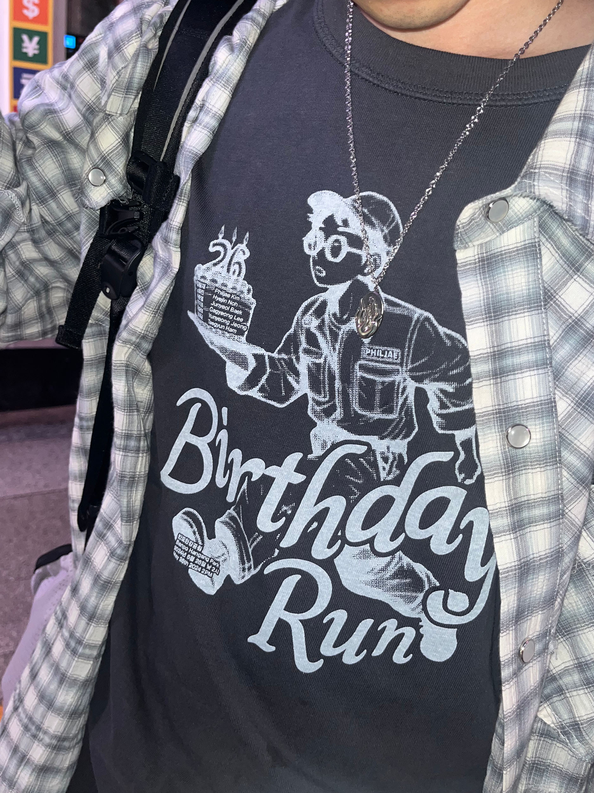
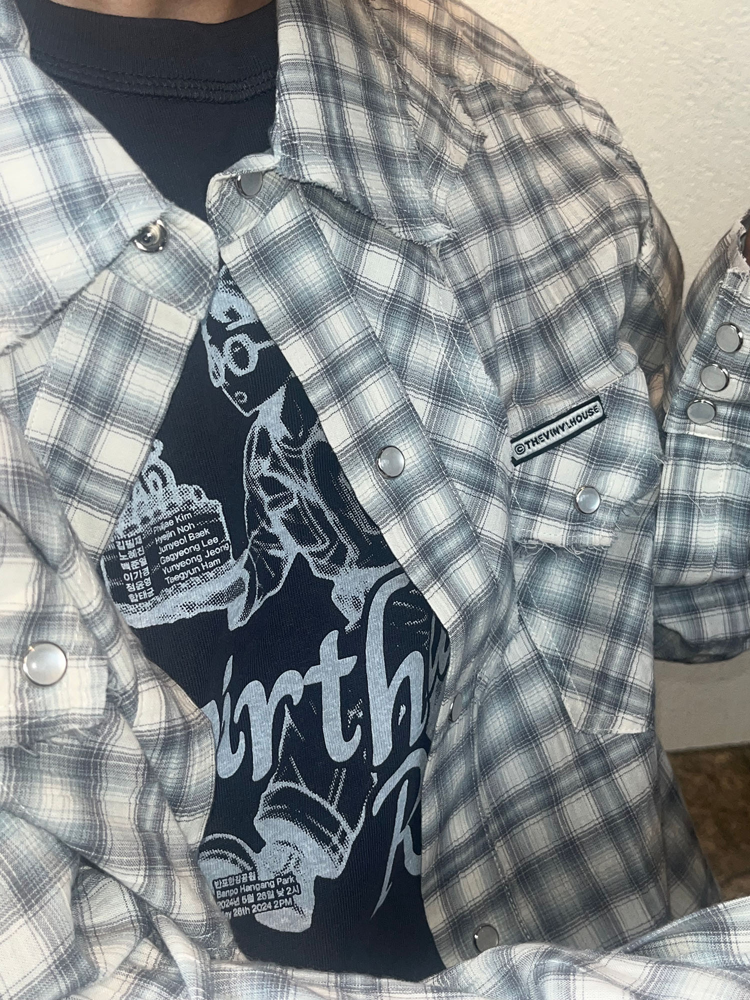
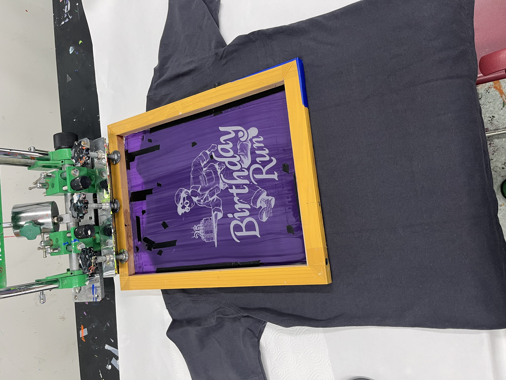
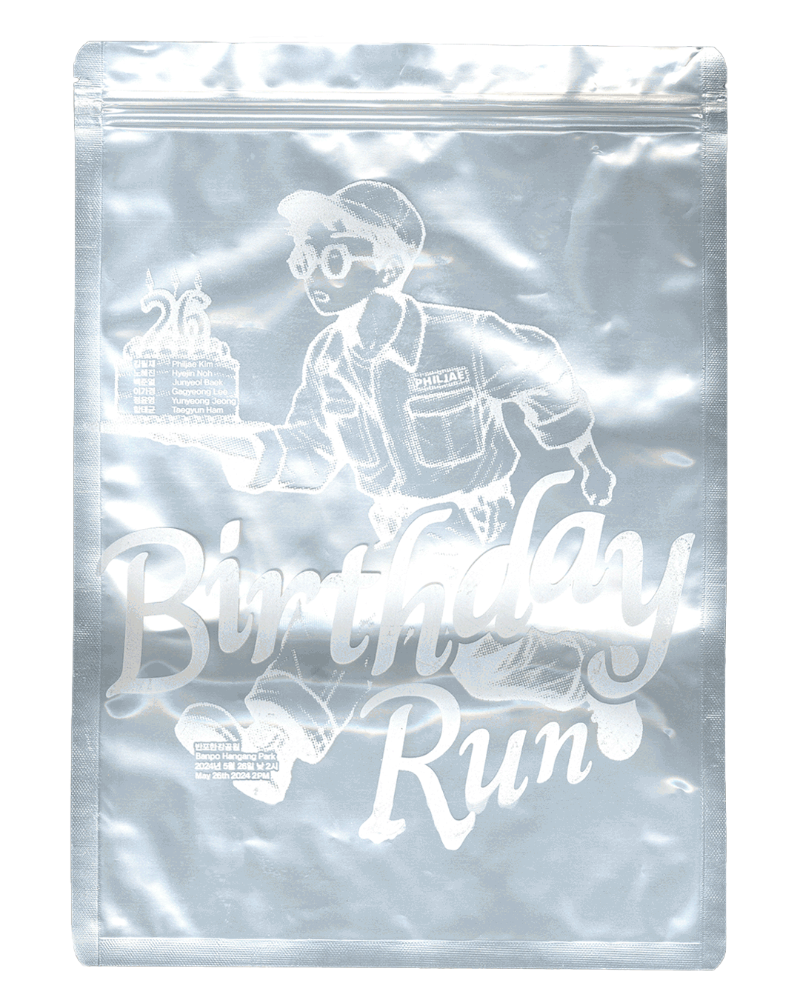

Birthday Run (2024)
My friends and I planned a running event on @feel_jaru’s birthday, and this T-shirt serves as both a poster and a gift for @feel_jaru.🎁 The running course was planned from Banpo Hangang Park to Noksapyeong Station — but the run was canceled due to rain.☔️




